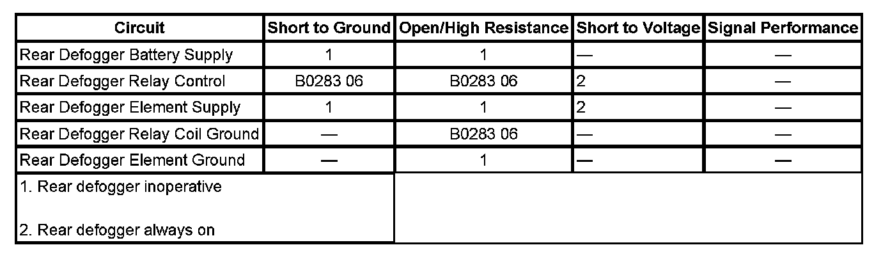

B0283
DTC B0283
DIAGNOSTIC INSTRUCTIONS
- Perform the Diagnostic System Check - Vehicle prior to using this diagnostic procedure. Initial Inspection and Diagnostic Overview
- Review Strategy Based Diagnosis for an overview of the diagnostic approach
- Diagnostic Procedure Instructions provides an overview of each diagnostic category
DTC DESCRIPTOR
DTC B0283 06
Electric Rear Defrost Circuit Short to Ground or Open

DIAGNOSTIC FAULT INFORMATION
CIRCUIT/SYSTEM DESCRIPTION
The HVAC control module controls the rear window defroster through the REAR DEFOG relay located in the underhood fuse block. When the rear defroster is activated the HVAC control module supplies battery voltage through the defroster relay control circuit to energize the relay coil.
CONDITIONS FOR RUNNING THE DTC
- Battery voltage is within 8.7-16.5 volts.
- The ignition is ON.
CONDITIONS FOR SETTING THE DTC
The defroster relay control circuit is open or shorted to ground.
ACTION TAKEN WHEN THE DTC SETS
The defroster relay control will be deactivated.
CONDITIONS FOR CLEARING THE DTC
- The DTC will become history if the HVAC control module no longer detects a fault.
- The history DTC will clear after 100 fault-free ignition cycles.
- The DTC can be cleared with a scan tool.
CIRCUIT/SYSTEM TESTING
1. Ignition OFF, remove the REAR DEFOG relay in the underhood fuse block.
2. Test for less than 1 ohm of resistance between the relay coil ground circuit terminal 85 and ground.
- If greater than the specified range, test the ground circuit for an open/high resistance.
3. Connect a test lamp between the relay control circuit terminal 86 and the ground circuit terminal 85.
4. Ignition ON, operate the rear window defroster ON and OFF. The test lamp should turn ON and OFF when changing between the commanded states.
- If the test lamp is always ON, test the control circuit for a short to voltage. If the circuit tests normal, replace the HVAC control module.
- If the test lamp is always OFF, test the control circuit for a short to ground or an open/high resistance. If the circuit tests normal, replace the HVAC control module.
5. If all circuits test normal, test or replace the REAR DEFOG relay.
REPAIR INSTRUCTIONS
Perform the Diagnostic Repair Verification after completing the diagnostic procedure. Verification Tests
Control Module References for HVAC control module replacement, programming, and setup. Programming and Relearning